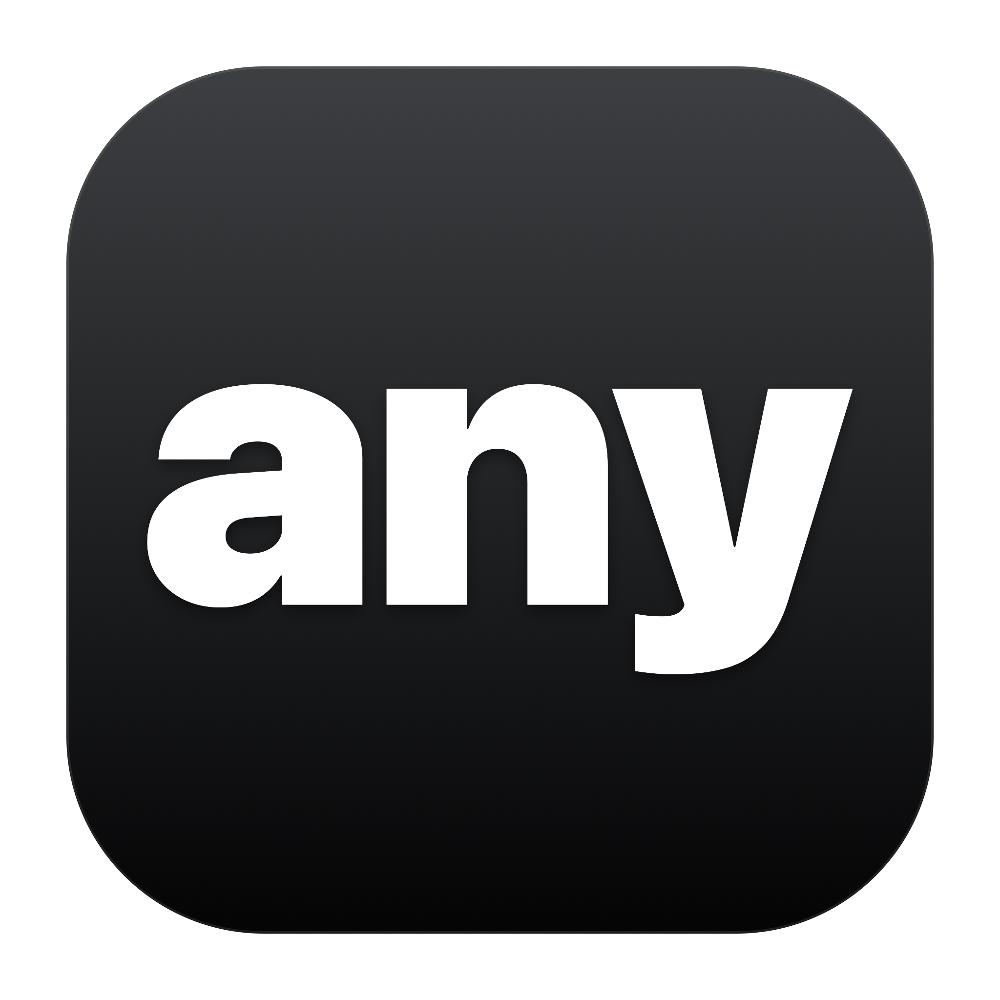

Ваш словарь
Имена, термины и сокращения. Ваши варианты написания всегда под рукой.

Зажмите Fn, скажите — и получите текст там, где работаете. Выбирайте локальные модели, чтобы обрабатывать речь на своём Mac.
Релиз готовится30 дней бесплатно · без карты · Apple Silicon · macOS 14+
Давайте оставим утро свободным для самого важного.\n\nЧуть меньше печатать. Чуть больше пространства для мыслей.
В заметке, сообщении или поддерживаемом текстовом поле вашего редактора.
Выбранный движок превращает запись в текст. Локальные режимы работают на Mac.
Вставьте результат, найдите его в локальной истории и научите any своим словам.
Имена, термины и сокращения. Ваши варианты написания всегда под рукой.
Вернитесь к расшифровке, скопируйте или экспортируйте её. История хранится на этом Mac.
Структура и правка голосом используют отдельную локальную текстовую модель или ваш ключ Groq.
Пробный период начинается после настройки или первой успешной диктовки вне тренировочного поля.
Пожизненная лицензия для этого Mac. Будущие обновления включены.
Покупка из приложения через Telegram. Стоимость Stars зависит от платформы и региона. Условия использования Groq определяются вашим аккаунтом Groq.
Релиз готовитсяЛокальная диктовка работает после загрузки речевой модели. Для структуры и правки голосом нужна отдельная текстовая модель. Перевод требует macOS 15+ и поддерживаемых установленных языков Apple. Загрузка моделей, проверка trial и обновлений используют сеть. Groq — облачный вариант.
Apple Silicon и macOS 14 или новее. Перевод Apple требует macOS 15+. Для отдельной локальной текстовой модели нужны минимум 8 ГБ памяти и около 2,5 ГБ на диске; речевые модели занимают дополнительное место. Скорость зависит от Mac и выбранной модели.
Обязательного аккаунта any нет. При настройке приложение спрашивает имя и языки. Для Groq и покупки в Telegram используются аккаунты соответствующих сервисов.
Проверяйте обновления из меню any. Подготовленные публичные сборки используют подписанные обновления. Вы выбираете, когда скачать и установить их.